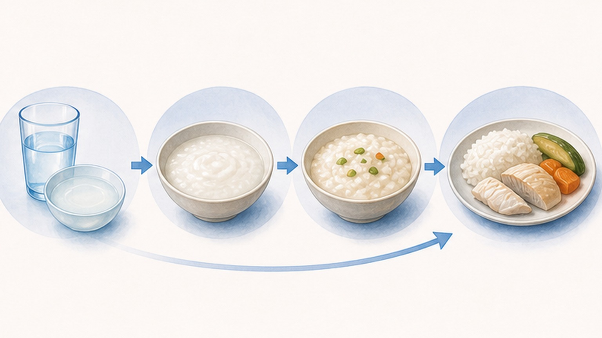

식사는 한 칸씩 올립니다 매 끼마다 올리면 재발합니다

| STEP 1쉬기 | STEP 2죽·누룽지 | STEP 3흰쌀밥 | STEP 4양 늘리기 |
|---|---|---|---|
| 한두 끼는 쉽니다. 물·보리차를 조금씩 자주 마십니다. | 속이 가라앉으면 죽·누룽지를 적은 양부터 시작합니다. | 죽이 괜찮으면 흰쌀밥에 아래 표의 부드러운 반찬을 곁들입니다. | 여러 끼 연달아 괜찮으면 그때 양을 늘립니다. |
먹어도 되는 것 · 잠시 피할 것
| 구분 | ||
|---|---|---|
| 밥·곡류 | 죽·누룽지·흰쌀밥 | 잡곡, 밀가루 음식(빵·면·국수) |
| 반찬·채소 | 감자·두부, 익힌 호박·가지·당근 | 샐러드·생야채 |
| 과일 | 바나나 | 사과·복숭아 같은 과일 |
| 그 밖 | 담백하게 조리한 음식 | 유제품(우유 등), 기름진 고기, 술 |
수분 보충 · FLUIDS
- 수분은 물·보리차로 채웁니다. 한 번에 많이보다 조금씩 자주 드세요.
- 이온음료는 당 때문에 설사를 늘릴 수 있습니다.
- 설사가 잦거나 어지러우면 약국의 경구수액제가 물보다 낫습니다.
좋아진 뒤에도 · AFTER RELIEF
“좋아진 느낌은 문턱 아래로 내려왔을 뿐입니다.” 장은 아직 회복 중이라 바로 평소처럼 먹으면 문턱을 다시 넘기 쉽습니다. 좋아진 뒤에도 조금 더 조심하면서 식사량을 천천히 늘리세요.
흔한 오해
MYTH 1
“잡곡·야채·과일은 괜찮다”
평소엔 좋지만 장염 때는 설사를 늘릴 수 있습니다. 나은 뒤에 드세요.
MYTH 2
“양배추가 위에 좋다”
장염에 도움이 된다는 근거는 없고, 오히려 가스가 차고 더부룩할 수 있습니다.
MYTH 3
“이온음료로 보충한다”
당 때문에 설사를 늘릴 수 있습니다. 물·보리차가 먼저입니다.
MYTH 4
“수액을 맞으면 낫는다”
수액은 부족한 수분·전해질을 채워 회복을 돕는 보조 치료이며, 장염 자체를 낫게 하는 약은 아닙니다. 마실 수 있으면 입으로 먼저 보충하고, 구토·설사로 충분히 못 드시거나 탈수가 오면 수액이 회복에 큰 도움이 됩니다.
이럴 때는 다시 진료를 받으세요 · RETURN VISIT
- 열이 날 때
- 피가 섞인 변(혈변)을 볼 때
- 배의 한 곳이 계속 아플 때
- 구토가 계속될 때
- 소변이 크게 줄거나 일어설 때 어지러울 때(탈수)
- 좋아지지 않고 점점 나빠질 때
- 소변이 거의 안 나오거나 의식이 흐려지면 — 응급실로 가세요
해열은 타이레놀(아세트아미노펜)로 하세요. 소염진통제는 위장에 부담이 됩니다.